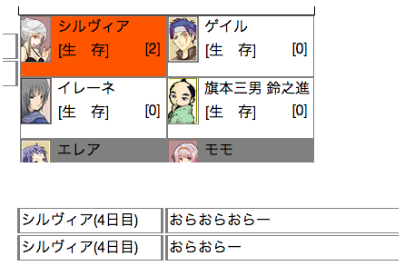
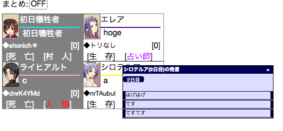
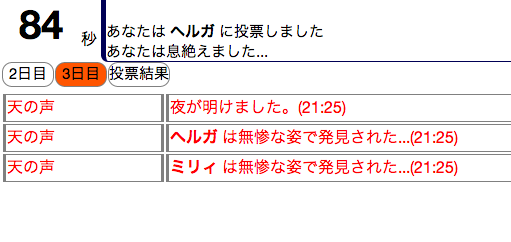
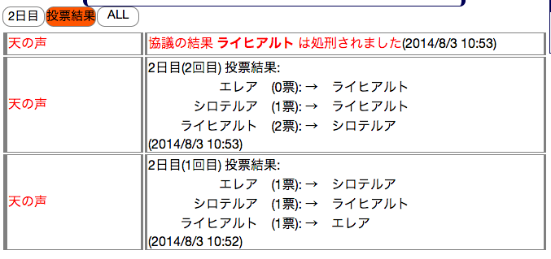

プレイヤー毎の発言ログ抽出
プレイヤーリスト上でログを見たいプレイヤーをクリックすると、
そのプレイヤーの昼の発言がログ欄に表示されます。
選択したプレイヤーをもう一度クリックすると選択が解除されます。

プレイヤーリスト上でログを見たいプレイヤーをShift+クリックすると、
そのプレイヤーの昼の発言がサブウィンドウに表示されます。
サブウィンドウで表示した場合、ログ欄の表示は切り替えません。

日にち毎の発言ログ抽出
ログセレクター上でログを見たい日にちをクリックすると、その日の昼のログがログ欄に表示されます。
選択したセレクターをもう一度クリックすると、選択が解除されます。

投票結果
ログセレクター上で『投票結果』をクリックすると、今までの投票結果がログ欄に表示されます。
『投票結果』をもう一度クリックすると、選択が解除されます。
